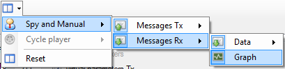

Click ‘Spy and Manual’  to get layout commands of this mode.
to get layout commands of this mode.

The menu is divided in two parts:
 Messages Tx: for the transmission part of the manual control.
Messages Tx: for the transmission part of the manual control.
 Messages Rx: for the reception part of the manual control.
Messages Rx: for the reception part of the manual control.
The ‘Message Tx’ menu is divided in two parts:

 Engineering messages: Showing or hiding the ‘Engineering’ section of the data transmission panel.
Engineering messages: Showing or hiding the ‘Engineering’ section of the data transmission panel.
 Raw messages: Showing or hiding the ‘Raw’ data section of the data transmission panel.
Raw messages: Showing or hiding the ‘Raw’ data section of the data transmission panel.
The ‘Message Rx’ menu is also divided in two parts:

Data: Showing or hiding the ‘Data’ section of the data reception panel.
 Graph: Showing or hiding the ‘Graphic trace’ section of the data reception panel.
Graph: Showing or hiding the ‘Graphic trace’ section of the data reception panel.
Finally, ‘Data’ menu is split in two parts as well:

Engineering messages: Showing or hiding the ‘Engineering’ section of the data reception panel.
Raw messages: Showing or hiding the ‘Raw' data section of the data reception panel.
Created with the Personal Edition of HelpNDoc: Easily create Web Help sites